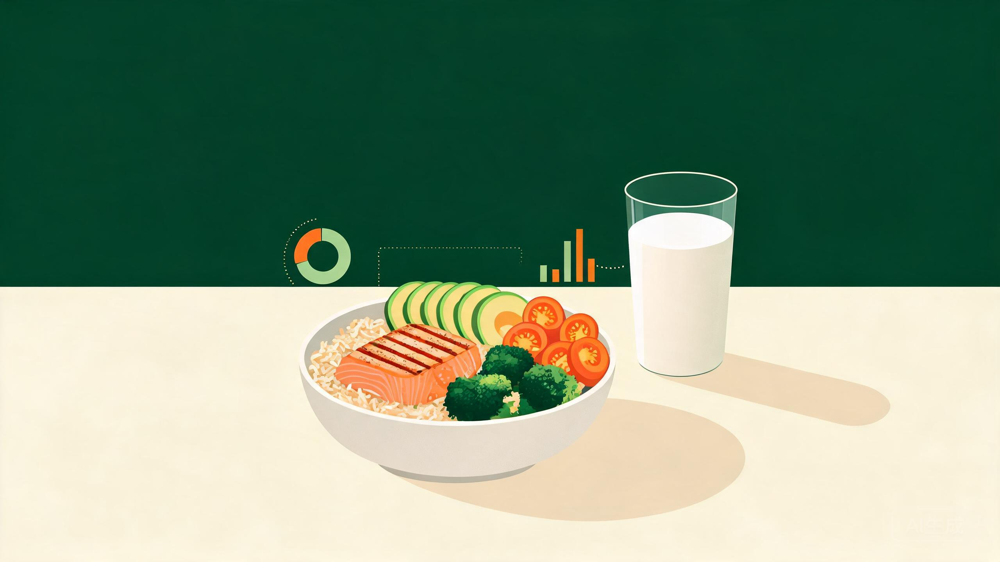

一句话，读懂你的每一餐
Speak your meal, see your nutrition.
“一碗米饭，一份红烧肉，一杯 250 毫升牛奶，一个苹果” —— AI 秒速识别 4 种食物，合计 941 kcal
DeepSeek 大模型一句话识别食材饮品，自动估算份量克数。
热量、蛋白、碳水、脂肪、纤维五维数据精确到克。
按身体数据与减脂 / 维持 / 增肌目标科学定制每日标准。
过敏原档案注入识别流程，主动规避风险食材。
7 / 30 天双周期摄入趋势，自动标记营养缺口。
每餐生成健康评分与建议，优化就在下一餐。
说出吃了什么
拆解食材份量
五维精确数据
评分与优化方向